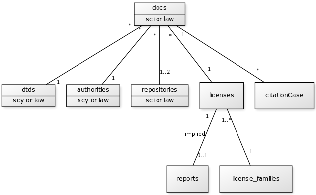
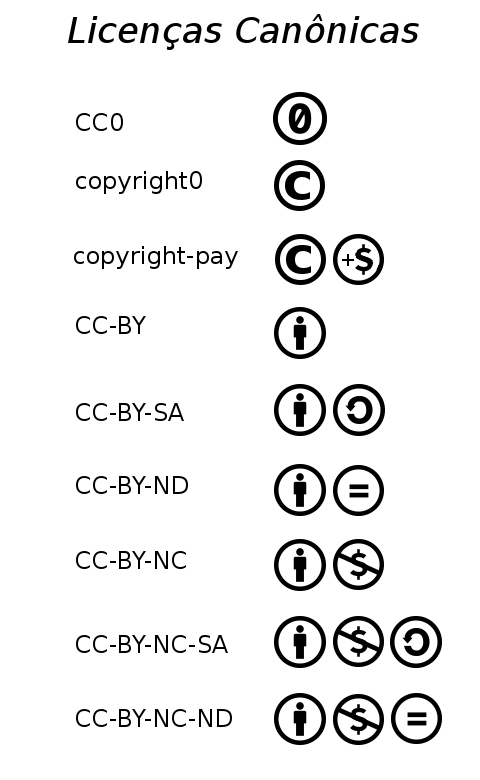
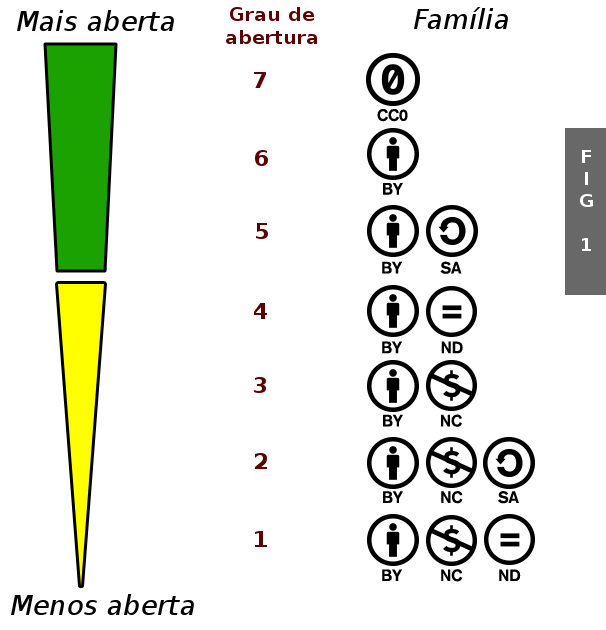
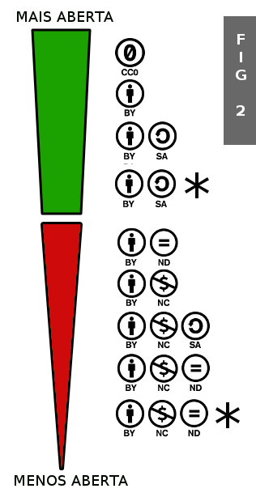
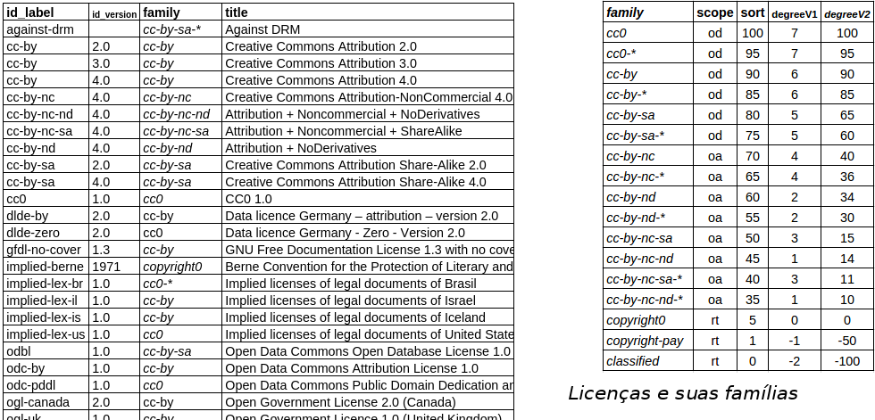
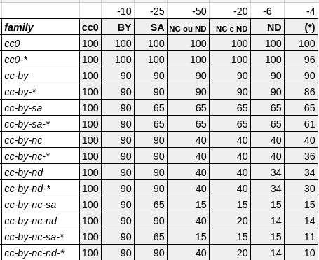
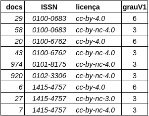
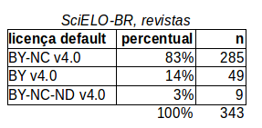
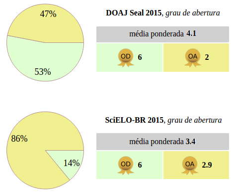

Ideias abertas_Teste
Coerência de abertura em repositórios Open Access: sugestão de métricas e metodologias
Peter de Padua Krauss
Open Knowledge Brasil
RESUMO
Documentos legislativos e artigos científicos têm seu depósito permanente e seu livre acesso garantidos por grandes repositórios digitais, tais como o LexML para legislação e o SciELO para artigos científicos. São repositórios Open Access, em que o ato de registro já pressupõe uma licença aberta. Para quem espera fazer pleno uso do documento (ler, entender, reusar e redistribuir), todavia, o direito de acesso expresso pela licença pode ser insuficiente; o mesmo direito precisaria ser observado nos anexos, figuras e tabelas, assim como nos documentos citados – leis citam normas técnicas e outras leis, artigos citam outros artigos. Essa dependência cria demanda por uma licença igualmente aberta no objeto de que depende. Documentos com licenças abertas idealmente não teriam restrições de acesso nas suas dependências: esse é o princípio em que repousa o conceito proposto de OpenCoherence (coerência da licença um documento com as licenças das suas dependências).
Uma métrica baseada no ranking do grau de abertura das licenças é proposta, para se definir o grau de abertura de um documento e o grau médio de um conjunto de documentos. Estratégias de agregação e classificação das licenças também são apresentadas. Em seguida, com fundamento nas métricas de abertura, são sugeridas métricas de OpenCoherence baseadas na análise das dependências.
Alguns resultados preliminares do projeto OpenCoherence são também apresentados. Uma série de documentos dos repositórios está sendo selecionada a título de amostragem e de evidência dos problemas levantados; experimentos com algoritmos de análise estão sendo realizados.
Nas últimas décadas, a defesa por um modelo livre de conhecimento, o ativismo e iniciativas por maior transparência nos governos e na gestão da produção científica, vêm crescendo e se consolidando. Documentos legislativos e artigos científicos são exemplos típicos de expressão do conhecimento, milhões desses documentos(45) são mantidos hoje, com efeito de depósito legal(1,57) e sem barreiras de acesso, em grandes repositórios digitais:
Em ambos tipos de repositório, o documento é depositado por uma autoridade, como uma revista científica ou uma organização governamental com poder legiferante. Estes repositórios oficiais garantem o livre acesso, a autenticidade, a integridade e o valor de prova dos documentos.
São repositórios Open Access(8), em que o ato de registro já pressupõe uma licença aberta, usualmente CC-BY(43) nos repositórios de literatura científica(9) e CC0(43) nos repositórios de legislação(10).
Para quem espera fazer pleno uso de um documento pertencente a um desses repositórios, todavia, o direito de acesso expresso pela licença pode ser insuficiente; o mesmo direito precisaria ser válido para os seus anexos, figuras e tabelas de autoria de terceiros, assim como para os documentos citados – leis citam normas técnicas e outras leis; artigos tipicamente citam outros artigos. Podemos denominar os documentos citados e os objetos internos, coletivamente, de dependências do documento. O pleno uso requer a preservação dos direitos e expectativas expressos pela licença do documento, requer que cada uma das suas dependências apresente uma licença de igual ou maior grau de abertura.
As dependências internas, como anexos e figuras de autoria de terceiros, podem possuir as suas próprias licenças. Historicamente, os documentos digitais evoluíram das reproduções do papel para formas mais amplas de conteúdo, ao incorporarem o uso de metadados. Nas décadas recentes cresceu a tendência de se formalizar as dependências internas nos metadados, tornando os créditos e atribuições mais parecidos com licenças. Essa realidade, ainda incipiente, foi observada por Mietchen et al.(27) no PubMed Central, e pode ser percebida em outros repositórios. Em alguns contextos, como a Wikipédia, as licenças das dependências internas de um artigo são de fato explicitadas e sistematicamente registradas.(34)
As dependências externas, ou seja, a relação do próprio documento com os documentos citados, também se beneficia da precisão e formalização, proporcionados por metadados e pelas ferramentas de marcação e de autoria de documentos, que garantem computacionalmente essa precisão. Do ponto de vista do usuário, o principal benefício da precisão é a conversão das dependências externas em links.
Tradicionalmente o documento legislativo é parte integrante de um hipertexto legislativo,(40) que, com a padronização da sua representação digital, se tornou uma realidade.(32,40) Analogamente repositórios como SciELO e PubMed Central garantem aos autores e leitores a hipertextualização dos documentos científicos.(33)
Problema e hipóteses vinculadas
Como resultado de anos de uso dos recursos hipertextuais, e de uma cultura de reaproveitamento, observa-se uma tendência dos documentos científicos e legislativos a apresentarem conteúdos menos autônomos. Essa suposta redução da autonomia se manifestaria de duas formas:
Por ser uma problemática baseada em fatos subjetivos, esses fatos precisam ser sustentados por coleções de evidências. As hipóteses de “risco” (probabiliade não-nula) descritas acima, por sua vez, precisam ser confirmadas por auditorias.
O projeto OpenCoherence reúne várias iniciativas, cada qual com suas motivações. Em termos metodológicos, o primeiro passo foi a busca por um software de auditoria dos repositórios. A constatação pelo autor junto à comunidade do projeto Global Open Data Index(43), GODI, da ausência de softwares para automação dessa tarefa motivou a construção dos algoritmos para a sua automação. Tais algoritmos, por sua vez, demandaram a proposta de um dataset de licenças mais completo.(50)
Foi também constatado no GODI que, entre os repositórios legislativos de diversos países, incluindo o Brasil, não se encontram expressas as licenças dos documentos legislativos: são licenças implícitas(49), que podem ser interpretadas das leis aplicáveis. A construção de relatórios(49) dessas interpretações foi motivada por essa demanda e pela necessidade de se preservar as inferências realizadas.
Em seguida, após busca por subsídios teóricos e discussão em fóruns, constatou-se a ausência de uma conceituação mais clara das duas relações de coerência, interna e externa; sendo esta a principal motivação para a construção de um arcabouço teórico mais sólido, no presente artigo.
Quanto às motivações para se analisar a coerência interna, foram elas: a auditoria de documentos com dependências suspeitas (de não estarem cumprindo com as condições da própria licença) e a caracterização da sutil perda do grau de abertura que ocorre em repositórios Open Access, por influência das dependências internas. Exemplo típico no Brasil são as leis orgânicas dos municípios,(10) que são documentos CC0, mas muitos deles apresentam figuras (mapas) CC-BY(43) e CC-BY-NC.
Quanto às motivações para a análise de dependências externas, a análise permite estabelecer mais solidamente as justificativas para o licenciamento coerente em núcleos de redes semânticas formadas por documentos científicos e, sobretudo, legislativos.
No Brasil, onde é inescusável o desconhecimento das leis,(44) existem exemplos emblemáticos de documentos citados pela lei, determinando obrigações, porém sem uma licença de igual abertura:
O projeto OpenCoherence vem sendo construído como mini-framework, de software e de dados, para a auditoria dos repositórios de conhecimento científico e legislativo, e para o registro das evidências (documentos tidos como amostras) que reforçam as hipóteses de trabalho. Dentro deste contexto, são finalidades do projeto:

O projeto OpenCoherence encontra-se em andamento, com alguns aspectos estruturais já finalizados, tais como a organização dos dados e arquitetura de alguns módulos.
Os principais datasets(13) do projeto são:
O dataset licenses é complementado pelos relatórios de licença implícita na pasta reports.
No Brasil, nos EUA, na Islândia, e diversos outros países, os documentos legislativos não apresentam explicitamente uma licença, e, por isso, é necessário interpretar através do contexto e de leis que tratam do assunto. Esse trabalho interpretativo é registrado em relatórios (reports) de inferência da licença implícita(12). Exemplo: impliedLicense-lexBR(49) é o relatório que determinou a licença dos documentos da legislação brasileira.
Quanto aos softwares e algoritmos, os principais são:
No presente projeto, apenas documentos dos repositórios oficiais de literatura científica e de legislação são tratados. Quando necessário, esses documentos poderão ser referenciados abreviadamente por lawDoc (de law document) ou sciDoc (de scientific document).
O conceito de licença de uso de uma obra veio historicamente amadurecendo junto com o arcabouço dos Diretos Autoriais. Com os convenções internacionais iniciados com Berna em 1886, se consolidou a chamada “proteção automática”. Nos países signatários, que incluem o Brasil(51) e hoje representam mais de 90% das nações, qualquer obra cultural, tal como um documento, é automaticamente sujeita à Convenção de Berna, recebendo todas as proteções (exclusividade de cópia, de tradução, etc.). Pela mesma convenção são excluídas dessa proteção automática as obras reconhecidas do domínio público.
Qualquer outra forma de “exclusão da proteção automática”, como por exemplo permitir ao usuário criar derivativos, requer licenciamento. A grande proliferação das chamadas “licenças abertas” a partir da década de 1980, se deve a essa demanda em obras disponibilizadas pela Internet.
Apesar de existir uma visível tendência à padronização das licenças abertas, através de iniciativas tais como Creative Commons, ainda persiste uma grande diversidade de licenças e de modos de se expressar o licenciamento. Cada instituição, repositório ou mesmo cada autor pode estar imerso num contexto institucional diferente, e fazendo suas próprias opções. Não há uniformidade nos repositórios de documentos. Deve-se reconhecer que existem dezenas de “licenças padrão” e diferentes formas de se expressar o licenciamento:
Apesar da tendência à padronização das licenças, existe ainda uma grande diversidade a ser gerenciada. O agrupamento de licenças similares em “famílias de licenças” ajuda a reduzir essa diversidade e simplificar o processo de interpretação das diferentes licenças.
Uma forma usual de agrupamento é em torno dos mantenedores das licenças; por exemplo grupo da Free Software Foundation (AGPL, GFDL, GPL, e LGPL). Todavia, tais agrupamentos não reúnem licenças de mesmo comportamento contratual, podendo ser caracterizados apenas como marcas (branding).

O que se destaca nos estudos e discussões sobre licenças, é a similaridade contratual. No dataset licenses(57)cada licença é caracterizada por um conjunto de atributos de presença/ausência das cláusulas mais comuns: is_by (atribuição), is_sa (share-alike), is_nc (não-comercial) e outras. Por procedimentos básicos de taxonomia numérica, esses atributos podem gerar agrupamentos, denominados aqui de famílias de licença.
Como em agrupamentos linguísticos e biológicos,(46) convencionou-se no projeto eleger dentre os membros de cada grupo um representante, dito canônico. Cada família é representada em geral por uma licença mais popular,(43) e o nome da família obtido de simplificação do nome dessa licença canônica. Exemplos:(50)
A família copyright0 corresponde às licenças fixadas pelas cláusulas do Tratado de Berna,(49) tomando-se o de 1979 como referência. A família copyright-pay ao caso em que o usuário só tem acesso mediante pagamento.

Grau de abertura de uma licença
As famílias podem ser ordenadas num ranking, da menos aberta à mais aberta, como ilustrado na Fig.1. Cada nível do ranking pode ser associado a uma quantidade determinante do grau de abertura. Essa determinação numérica é uma convenção arbitrária, sendo degreeV1 (ilustrado) e degreeV2 as duas convenções testadas pelo projeto.
A caracterização do grau de abertura de um documento pode ser formalizada com o apoio da tabela de licenças, através do seguinte procedimento:
Legenda fig abaixo

O ranking das famílias de licenças tem certa afinidade com o grafo de compatibilidade de D.A. Wheeler(14) mas o enfoque da abertura no presente projeto é dado apenas pela compatibilidade de acesso.
Na convenção degreeV2, adotou-se um peso maior para as licenças aceitas como abertas pela Open Definition (região verde na Fig.2), atribuindo-se valores entre 50 e 100 às mais abertas, entre 0 e 15 às menos abertas.(41) Adotou-se também uma subdivisão das famílias, para contemplar a diferenciação das licenças, indicadas por (*) na Fig.2, que apresentam cláusulas adicionais aceitáveis, como previsto pela seção "2.2 Acceptable Conditions" da Open Definition.
Para utilização em algoritmos ou fórmulas matemáticas do grau de abertura, podemos adotar os seguintes símbolos e convenções:
od(docX)ϵ[0-Mx]⊆ℕ é o grau de abertura (od vem do inglês openness degree) do documento X (docX), inferido por sua licença canônica, canLic(docX)ϵ{"cc0", "cc-by", ...}
od(repoX)ϵ[0-Mx]⊆ℝ+ é o grau de abertura de repoX={doc1, doc2, ..., doc_i, ..., docN}
onde docX é um documento e repoX é um repositório, representado por um conjunto de N documentos. Um documento possuidor de restrições de copyright não-aberto terá sempre od(docx)=0. O valor NULL pode ser adicionado no domínio, para indicar licença desconhecida. A definição operacional de od(repoX) pode ser expressa em termos da seu doc_i e a média de od(doc_i) ao longo dos N documentos.
O intervalo de 0 a Mx segue o padrão adotado, Mx=7 no degreeV1, Mx=100 no degreeV2.
Grau de abertura médio de uma coleção
Os repositórios abertos e com alguma representação semântica (metadados) da licença dos seus documentos podem ser facilmente auditados quanto ao grau de abertura de cada um dos seus documentos. Eles são abstraídos como conjuntos simples,
repoX = {doc1, doc2, ..., doc_i, ..., docN}
o mesmo valendo para outros tipos de conjunto, tais como revistas (conjuntos de artigos), decompondo-se os conjuntos de conjuntos quando necessário, tais como coleções (conjuntos de revistas decompostos em artigos), etc.
Tecnicamente esses conjuntos podem ser dispostos em bancos de dados, onde serão consultados através de linguagem SQL(17). Seguindo o exemplo do projeto Open Access Media Importer(28) e de procedimentos usuais de indexação de documentos, dezenas de tipos de consulta podem ser realizadas pelo banco de dados:
|
Descrição da consulta |
Expressão SQL no modelo OpenCoherence |
|
Contar o número de documentos de um conjunto, n(repoX). Supor repoX determinado por um valor dado, $1. |
SELECT count(*) AS n FROM oc.docs WHERE repo=$1 |
|
Listar os documentos de repoX que apresentam uma licença explícita. |
SELECT * FROM oc.docs WHERE repo=$1 AND kx->>'license' IS NOT NULL |
|
Listar os documentos de repoX que apresentam uma licença implícita. |
SELECT * FROM oc.docs WHERE repo=$1 AND info->>'license' IS NOT NULL |
|
Listar todas as licenças com degreeV1>5. |
SELECT fam_name, f.kx_degrees[1] as deg, lic_name FROM oc.licenses l INNER JOIN oc.license_families f ON lic_family=fam_id WHERE f.kx_degrees[1]>5 |
|
Obter todos os resumos de documentos do tipo “research article”. |
SELECT id, (xpath('//front//abstract[1]',xcontent))[1] as abstract FROM oc.docs WHERE kx->>'article_type'='research-article' |
Em caso de auditoria, as licenças podem ser verificadas como de fato abertas, ou os números observados (valores amostrais) comparados pelos números oferecidos pelos mantenedores dos repositórios (valores nominais). Em caso de caracterização, os números observados podem ser sugeridos como valores nominais.
Quando os documentos apresentam uma licença explícita, como nos repositórios do Reino Unido(15) ou da Alemanha(16), a auditoria do valor nominal de abertura do repositório é mais simples: basta verificar a licença de cada documento. Em outros repositórios, a licença é definida para todo o repositório, o que também simplifica a análise. Por fim, é comum, como inclusive no caso do Brasil, quando essa “licença geral do repositório” não é explícita mas pode ser inferida.(12) A construção de um “relatório de inferência da licença”, em tais condições, é a primeira etapa do trabalho.
Tecnicamente um repositório de documentos legislativos é um banco de dados de lawDocs caracterizados por uma linha no dataset lawRepos e sua "licença padrão" (campo repo_license).
Supondo que cada doc_i do repo tem um od(doc_i), expressando em SQL(17), temos:
WITH odvals AS (
SELECT CASE WHEN doc_license IS NOT NULL THEN od(canLic(doc_license))
ELSE $od_dft
END AS od_doc
FROM law_repo
) SELECT AVG(od_doc) AS od_repo, COUNT(*) AS N FROM odvals;
onde $od_dft é o valor od da licença default(56) do repositório. Itens escolhidos a dedo (como os casos citados na seção Motivações) em geral não poderão constar como parte da amostra, todavia pode ser importante estimar um fator de raridade (100 * N_rare/N_sampled). O valor habitual esperado para N_rare é zero. Desse modo, quando a comunidade aceita uma pequena amostragem como evidência (ver dataset lawDocs), o openDegree do campo repo_license pode ser usado como od_repo representativo.
Quando o repositório oficial obriga o depositante a explicitar a licença a cada documento, como no caso do PubMed Central,(18) ou oferece uma licença padrão, como faz o SciELO,(19) é fácil auditar a coerência entre a abertura observada e a indicada pela licença a cada documento (sciDoc) do repositório. Não há necessidade de se inferir licenças como no caso da legislação.
Tecnicamente, um repositório (repo) de documentos científicos é um banco de dados de sciDoc’s. Supondo que cada doc_i do repo tem um grau od(doc_i), expressando em SQL, teremos:
WITH odvals AS (SELECT od(canLic(doc_license)) as od_doc FROM law_repo)
SELECT AVG(od_doc) AS od_repo, COUNT(*) AS N_samples
FROM odvals WHERE od_doc IS NOT NULL;
O percentual de amostragem (100 * N_samples / N) pode ser usado como um indicador complementar.
Níveis de agregação na apresentação dos resultados
Medidas de tendência central, tais como a média, são aplicáveis a grandezas contínuas. Podemos aferir, por exemplo, a temperatura média de um copo de água ao longo do tempo. Se esperamos indicar a ocorrência de mudanças qualitativas, todavia, tais como fervura ou congelamento da água do copo, o valor central (suponhamos “média de 17±9 °C”) não capta essa informação. É mais representativa a média relativa a cada estado da água: “90% do tempo líquida com média de 19 °C; 10% do tempo sólida a -2 °C”.
As noções qualitativas de “água líquida” (de 0 °C a 100 °C) e “água sólida” (abaixo de 0 °C) são expressas por intervalos da grandeza, de modo que a representação vetorial, [90% líquida 19 °C; 10% sólida -2 °C], garante também a informação da média, 0,9*19+0,1*(-2)=17. Por serem aferidas de intervalos complementares, cada uma dessas projeções vetoriais (sólida/liquida/gasosa), pode ser considerada uma representação agregada do valor da grandeza.
O uso da média para se expressar a tendência central do grau de abertura de um grande conjunto de documentos, com grande diversidade de licenciamento, está sujeito a um questionamento similar dos resultados qualitativos: se extremos forem qualitativamente distintos, a média sozinha não permitirá a caracterização qualitativa. A solução sugerida é justamente a adoção da representação vetorial em tais situações.
Ao expressar as licenças de um conjunto em termos de suas respectivas famílias, já estamos lançando mão de um primeiro nível de agregação. Convencionou-se um segundo nível de agregação, a ser utilizado também como projeções na representação vetorial:
A partir destas convenções, o levantamento dos graus de abertura de um conjunto de documentos pode ser organizado em diferentes graus de agregação, e médias podem também ser expressas na forma vetorial,
[p1 ”% OD” m1; p2 ”% OA” m2; p3 ”% RT” m3]
com média geral p1*m1+p2*m2+p3*m3. Na seção “Resultados preliminares” a representação é ilustrada.
Como vimos, o grau de abertura da licença atribuída a um documento pode não ser suficiente para expressar a realidade do acesso ao conhecimento expresso pelo documento. Quando a leitura ou entendimento plenos do conteúdo expresso pelo documento dependem de anexos ou de documentos citados, e esses objetos apresentam restrições de acesso, o documento em si não pode ter o seu grau de abertura expresso apenas pelo grau da sua própria licença. O documento que possui dependências precisa ter seu grau de abertura calculado também em função dessas dependências.
Dependências internas (autorais)
As partes de um documento (apêndices, figuras, mapas, etc.) provenientes de outras fontes, quando existem, formam o conjunto de dependências autorais desse documento. Podem ser caracterizadas pela simples atribuição (por exemplo, indicação da fonte de uma figura na sua legenda), por uma expressão mais completa de créditos e permissões (tipicamente através de metadados na representação XML do documento), ou, eventualmente, até por uma licença independente. Para efeitos de discussão e análise, pode-se supor que a dependência autoral venha sempre representada por uma licença independente, que nos algoritmos será referida como attach_license.
Nos sciDocs e literatura científica em geral, as dependências autorais estão usualmente presentes em figuras e tabelas com atribuição de terceiros(31) e em blocos de material suplementar(20). Na literatura legislativa, são padronizadas principalmente como anexos(21). Nos repositórios, ambos são expressos em metadados, que, por sua vez, a título de simplicidade, podemos considerar metadados de licenças independentes.
Tecnicamente, num repositório com documentos XML que faça uso de padrões (JATS para sciDocs ou AKN para lawDocs), as dependências autorais podem ser verificadas diretamente por consultas XPath(22), e podemos calcular od(attach_license) de cada documento.
A perda de coerência na abertura do documento pode ser expressa com precisão. Em um documento com grau de abertura od_doc, em que suas M dependências internas possuem C≤M casos do tipo
od(attach_license) < od_doc
O fator p = C/M pode ser utilizado para representar essa perda. Esse fator p é válido inclusive para dependências portadoras de licenças abertas: um documento CC0 com dependências CC-BY, por exemplo, tem perda de abertura. Fatores baseados na divisão de od_doc pela média do grau de abertura do mesmo conjunto, todavia, requerem alguns cuidados no seu cálculo (ex. divisão por zero) e na sua interpretação.
Dependências externas (citações)
O conteúdo complementar relevante de um documento legislativo ou científico pode vir na forma de citação.
Uma lei tem dependência externa relevante quando se propõe a expressar uma dada obrigação, mas tem no texto que explica essa obrigação uma interrupção, remetendo a um segundo documento (a citação) o restante das explicações. Se esse segundo documento não preserva o grau de abertura do primeiro, fica caracterizada a não-coerência de abertura. Caso típico (ver seção Motivações) foram as leis que expressavam obrigações na construção civil até 2004. Apesar de serem obrigações expressas por documentos legislativos (de licença CC0(12)), os mesmos não descrevem as obrigações, apenas citam as normas ABNT, que são documentos de licença ©ABNT (e até 2004 eram pagos).(23)
Similarmente, a citação num artigo científico será problemática se o documento perder a sua autonomia: quando o entendimento dos resultados é limitado por uma citação que bloqueia o acesso aos dados dos resultados; ou o entendimento da metodologia é limitado pela citação a um documento pago; enfim, quando o entendimento de uma parte relevante foi limitado pela restrição de acesso.
Em ambos os casos (leis e artigos), os documentos externos citados demandam citação objetiva e não-ambígua. Nos sciDoc’s, há também uma lista de referência padrão(24) apontando para documentos externos. Nos lawDoc’s, a análise de citações legislativas(25) determina quais documentos são relevantes e externos ao sistema legal – são de fato o complemento de uma regra de obrigação(26) da lei, como no exemplo da norma ABNT.
A caracterização formal da perda de coerência na abertura, do documento que cita uma obra não-aberta (ou de grau de abertura menor), pode ser tratada com o fator p na seção anterior, porém de dois modos:
A caracterização da relevância pode ainda ser objetiva, fixada pelo autor. Nas recomendações W3C e IETF (RFCs), por exemplo, a seção de referências já vem subdividida em "Normative references" (relevantes) e "Informative references".(59) Quando a filtragem objetiva automática dos itens relevantes não é possível, a avaliação é assistida, requer julgamento humano. Uma filtragem automática preliminar das dependências externas ajuda a reduzir o universo de avaliação. Em ambos os casos, automatizado ou não, uma curadoria ou grupo de avaliação se faz necessário para legitimar o processo e a auditoria final.
Os resultados estão sendo mantidos e atualizados em ambiente git colaborativo: https://github.com/ppKrauss/openCoherence.
Partindo-se do dataset oferecido pela Open Definition(11) uma tabela mais completa foi construída, garantindo que todas as licenças tenham sua família (coluna family) definida. As tabelas ilustradas abaixo exemplificam a caracterização das licenças mais conhecidas, e da atribuição de grau de abertura nas famílias, conforme as convenções de degreeV1 ou degreeV2.

As famílias com sufixo “-*” são aquelas que diferem ligeiramente da familia similar, por apresentarem alguma outra cláusula adicional aceitável (conforme seção "2.2 Acceptable Conditions" da Open Definition), afetando minimamente o seu grau de abertura.
As famílias podem ainda ser agregadas em “escopos”, que são pontos de vista adotados por comunidades distintas. A comunidade DOAJ(55) considera a maior parte das licenças CC como Open Access (oa), enquanto que a comunidade Open Knowledge optou por remover da sua Open Definition (od) as licenças que levam cláusulas NC e ND (41) (ex.CC-BY-NC, e CC-BY-ND).
No quadro a seguir, é apresentado em mais detalhe o processo e justificativas para as convenções fixadas ainda experimentalmente no projeto, degreeV1 e degreeV2, incluindo também os critérios para a representação vetorial (separação nos três escopos).
|
Apesar de arbitrárias as convenções de grau de abertura adotadas, é importante demonstrar sua formação a partir do ranking dos atributos canônicos. Exemplo-1. Com quatro atributos, do mais aberto ao menos aberto, adotando-se valores de 1 a 4, e a ordenação usual das ilustrações pictóricas de “continuum of openness”, BY > SA > ND > NC 4 > 3 > 2 > 1 Abreviações: NC, Non-Commercial (não comercial); ND, Non-Derivative (não a obras derivadas); BY, attribution (atribuição); SA, Share-Alike (compartilhamento pela mesma licença). A cláusua de atribuição (BY) gera uma restrição de liberdade menor do que a cláusula de SA, e assim por diante. Na agregação por escopo, pode-se ou não considerar cláusulas NC e ND como restritivas demais. Esse tipo de consideração pode ser embutida no ranking quando conceituamos ele como uma grandeza, e deixando nítido o “tamanho do salto” de um critério para o outro. Exemplo-2: CC0 > BY > SA >> ND > NC 10 > 9 > 8 >> 2 > 1 Durante as avaliações preliminares, um questionamento que surgiu foi quanto à relação entre NC e ND. Optou-se por adotar o critério OAspectrum(58) que considera NC>ND. Exemplo-3. Um novo ranking redefinido para acrescentar o valor do “*”: CC0* > BY > BY* > SA > SA* >> NC > NC* > ND > ND* 95 > 80 > 75 > 60 > 55 >> 15 > 13 > 10 > 8 A estratégia nos exemplos 2 e 3 foi impor uma barreira quantitativa entre os grupos distintos de famílias – aqui apelidados de “escopo”, e associados a open definition (escopo “od”), open access (escopo “oa”) e restrict (escopo “rt”). Essa “barreira quantitativa” entre escopos pode perder seu significado quando fazemos a média para caracterizar o grau de um conjunto de licenças. Casso esse conjunto contenha casos extremos, a média geral e o desvio padrão não informam da existência desses extremos. Para resolver esse probema, e mais importante do que mostrar o desvio padrão, é mostrar junto com a média geral os valores de participação a cada escopo: a representação do resultado em um vetor de escopo, [od; oa; rt], resolve o problema. As projeções são pares percentual-grau, e seu módulo é a média ponderada dos graus.  Por fim, para um melhor ajuste e justificativa na escolha dos valores de abertura de cada família, foi desenvolvida uma metodologia de cálculo com base na percepção do público, similar à metodologia OAspectrum(58). Ao invés de se arbirarem valores para as famílias, elegem-se um valor referência (100) para CC0 e valores de penalidade para as restrições (BY, SA, NC, * e ND). Para se garantir a diferenciação de escopo, “NC ou ND” representam um salto (penalidade -50). A planilha acima mostra os cálculos realizados. Os valores da primeira linha devem cumprir simultaneamente três ajustes: a ordem, os saltos entre escopos, e a percepção de peso. |
Obtenção de amostras e aferição das licenças
Foram explorados algoritmos para recuperação automática de grandes quantidades de documentos (XML) dos repositórios SciELO, PubMed Central e LexML, e N-Lex. As análises prospectivas se concentraram nos repositórios nacionais, SciELO-BR e LexML. A descrição do preparo dos dados e dos resultados ainda se encontra em construção, e exigiria um relatório separado.
Para saber qual a licença de cada documento, de forma automatizada e em regime de big data(48), as tabelas são inseridas em banco de dados (foi utilizado PostgreSQL 9.3) juntamente com os demais dados.

Exemplo de análise simples de licenças, usando convenção degreeV1 (grauV1) para métrica de grau de abertura. São listados artigos de 5 revistas (4 delas com acervo completo).
A tabela foi obtida com a seguinte consulta SQL,
SELECT count(*) as n_docs,
authority as issn, kx->>'license_url' as licence
FROM document_sci
WHERE kx->>'article_type' = 'research-article'
GROUP BY 2,3
ORDER BY 2,3
A revista científica de ISSN 0101-8175 (Revista Brasileira de Zoologia) produziu 974 artigos do tipo research-article, e todos eles, 100%, sob licença CC-BY-NC, portanto o grau de abertura 3, ou seja,
od(ISSN 0101-8175) = 3 ou [100% oa 3]
Já a revista de ISSN 0100-0683 (Revista Brasileira de Ciência do Solo) apresentou 29 documentos (33%) sob licença CC-BY, grau 6, e 58 (66%) sob licença CC-BY-NC, grau 3. Portanto, como 0.33*6+0.66*3=4,
od(ISSN 0100-0683) = 4 ou [33% od 6; 66% oa 3]
de onde podemos concluir que a segunda revista deve ser caracterizada como “mais aberta” que a primeira. A grandeza entre colchetes corresponde à representação vetorial, seção anterior, com projeções OpenDefinition (od) e OpenAccess (oa) de agregação dos valores de grau de abertura (no caso degreeV1).
Se o repositório fosse composto por apenas as revistas amostradas (ver tabela acima), o repositório teria um total de 2048 artigos e um grau de abertura dado por
od(repo) = 3,1 ou [33% od 6; 66% oa 4]
A forte proximidade desse resultado geral com o valor 3 se explica pela diretiva da SciELO em se adotar licenças default(56) nos documentos onde originalmente os autores não haviam indicado nenhum tipo de licença.

Num levantamento realizado junto à SciELO-BR, resumido na tabela ao lado, podemos notar a forte dominância das licenças BY-NC (grau de abertura 3).
Fazendo uso dessa tabela também podemos estimar o grau de abertura geral do repositório SciELO-BR:
od(scieloBR) = 0.83*3 + 0.14*6 + 0.03*1 = 3,4 ou [14% od 6,0; 86% oa 2,9]
O que demonstra uma uma tendência à elevação, mas ainda abaixo do grau 5.
Uma análise similar foi realizada sobre as revistas certificadas do diretório OpenAccess, DOAJ.(55) Das 5302 revistas com o selo, 5196 revistas declararam licenças conhecidas: 50% apresentaram licença da família CC-BY, 2% família CC-BY-SA, ou seja, 52% (2702 revistas) apresentaram licenças Open Definition. No restante: 22% CC-BY-NC-ND, ~19% CC-BY-NC, 6% CC-BY-NC-SA, 1% CC-BY-ND, o que permite inferir
od(DOAJ Seal) = 6*0,5 + 5*0,02 + 1*0,22 + 3*0,19 + 2*0,06 + 4*0,01 = 4,1 ou [53% od 5,9; 47% oa 2,0]
A média geral demonstra que o SciELO-BR tem grau de abertura (3,4) inferior à média DOAJ Seal (4,1). A caracterização vetorial mostra que a causa é a fraca participação de OD (Open Definition).

Na ilustração ao lado os mesmos resultados são apresentados com apoio de uma representação pictórica alternativa, que também faz parte do desenvolvimento do projeto, para garantir que as caracterizações e comparações sejam auto-evidentes para o usuário final.
A apresentação dos resultados relativos à coerência de abertura seguiriam convenções similares e compatíveis com estas. Quanto à métrica, está sendo abandonada a degreeV1 (ilustrações) para se assumir uma degreeV2 muito próxima da apresentada.
Trabalhos futuros e desdobramentos
Dada a dependência de interpretações e convenções a serem fixadas em consenso com uma comunidade mais ampla, é previsto o desdobramento de algumas partes do projeto, unindo-se esforços com outros:
Ainda não é certo se os relatórios de inferência de licença implícita(49), dado seu caráter mais genérico e de utilidade pública, podem seguir seu curso como projeto independente, ou se permanecerão no Licenses.
Um interpretador de licenças também se faz necessário, tendo em vista o problema das licenças presentes porém ilegíveis para a máquina. A tag <license> do sciDoc "DOI:10.1371/journal.pone.0039138.g001", por exemplo, está presente no seu XML, mas não tem URL, somente um texto para livre interpretação: "This is an open-access article distributed under the terms of the Creative Commons Attribution License". Apesar de ser possível a interpretação da licença por software, não poderá ser considerada 100% correta. Sugere-se uma biblioteca de regular expressions, similar à de Dorante (1997), para se recuperar as licenças mais frequentes a partir de textos como do exemplo. A biblioteca seria provavelmente incorporada ao Openness Metrics.
As principais aplicações do projeto OpenCoherence demandam a reunião de evidências, de modo que o maior investimento do projeto, a partir deste ponto, seria no sentido de ampliar e homologar sua base.
Num âmbito mais teórico, o conceito de OpenCoherence pode explorar a sua afinidade com noções similares e mais difundidas. Um princípio de neutralidade da rede de acesso, em hiperdocumentos e redes semânticas, por exemplo, seria análogo do princípio da neutralidade da Internet, fixado pelo Marco Civil da Internet no Brasil.
Na interface entre a teoria e o Direito Contratual, os conceitos da OpenCoherence podem viabilizar o desenvolvimento de novas licenças ou cláusulas, ao subsidiar um arcabouço conceitual e empírico (datasets das evidências), para cláusulas que lidem melhor com as relações parte-todo de conjuntos de documentos que se complementam na sua rede semântica. Uma cláusula de citation-alike, por exemplo, como exigência de que a reprodução do documento preserve o grau de acesso nos documentos complementares citados. De maneira similar, a coesão pode justificar, no contexto Open Definition, o tratamento do conjunto como unidade, tornando algumas cláusulas, tais como a CC-ND, admissíveis quando seus efeitos forem limitados ao interior dessa unidade.
Foram de grande importância para o projeto e o presente documento as discussões e o apoio na revisão do presente documento, oferecidos por Claudio Dal Prá, Natássya Silva e Raniere Silva. No início do projeto, as discussões preliminares com a comunidade da OKFN (lista e issues do projeto Open Definition) também foram importantes.
Referências
ABL - Academia Brasileira de Letras (2009) "Vocabulário Ortográfico da Língua Portuguesa” (VOLP). Ed. Global, 5ª edição, 976 Pgs. ISBN:9788526013636.
BRASIL (1975) “Decreto nº 75.699, de 6 de Maio de 1975” (Regulamentação da Convenção de Berna), http://www.lexml.gov.br/urn/urn:lex:br:federal:decreto:1975-05-06;75699
BRASIL (1998) “Lei nº 9.610, de 19 de Fevereiro de 1998” (Lei dos Direitos Autorais - LDA), http://www.lexml.gov.br/urn/urn:lex:br:federal:lei:1998-02-19;9610
DORANTE A. (1997), "Investigação de processo de conversão automática de textos estruturados para hiperdocumentos", Dissertação (Mestrado). http://www.teses.usp.br/teses/disponiveis/76/76132/tde-15092010-164303/publico/AlessandraDoranteM.pdf
JATS4R Working Group (2015) "Improving the reusability of JATS". In: Journal Article Tag Suite Conference (JATS-Con) Proceedings. http://www.ncbi.nlm.nih.gov/books/NBK279901/
LARIVIÈRE J. (2000), "Guidelines for legal deposit legislation". United Nations Educational. http://unesdoc.unesco.org/images/0012/001214/121413eo.pdf
MIETCHEN D., Maloney C, Moskopp ND (2013), “Inconsistent XML as a Barrier to Reuse of Open Access Content”. In: Journal Article Tag Suite Conference (JATS-Con) Proceedings. http://www.ncbi.nlm.nih.gov/books/NBK159964/